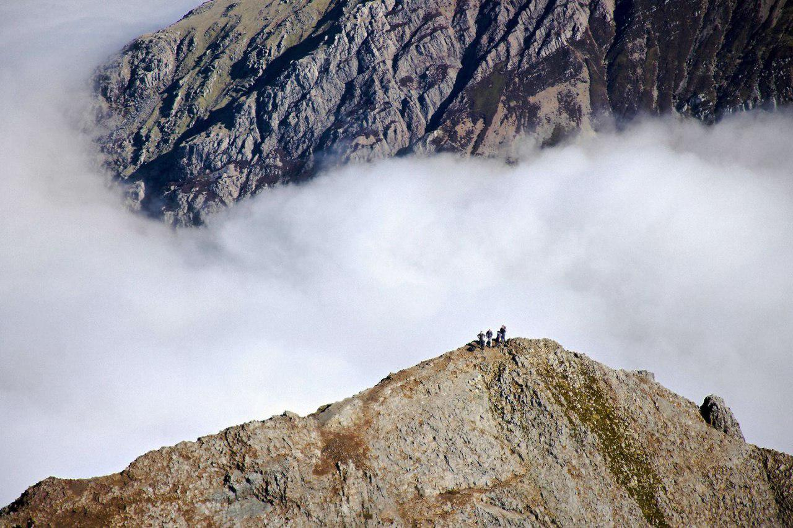
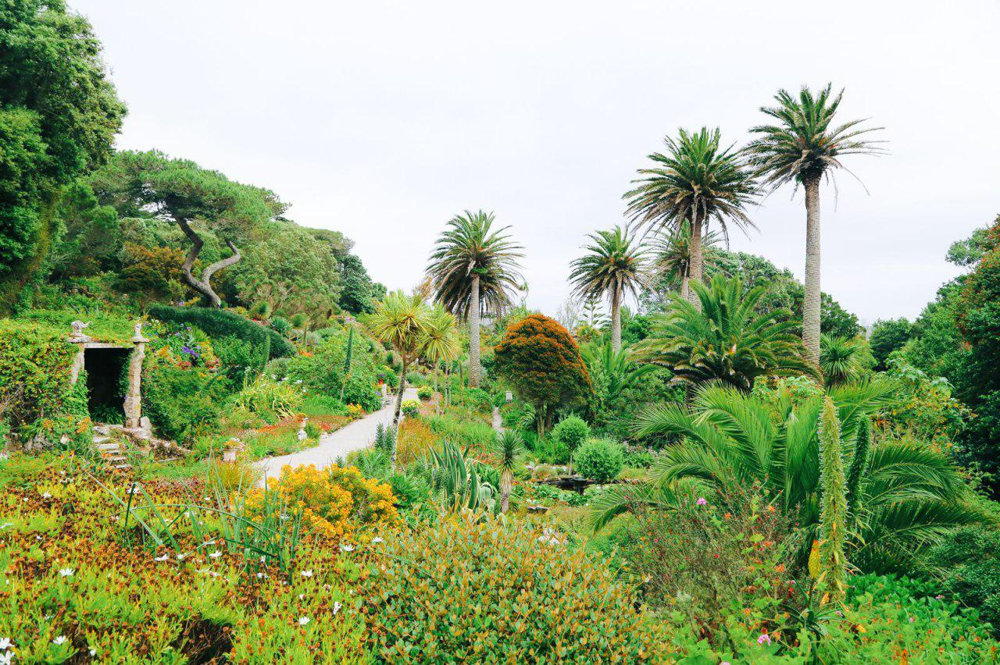
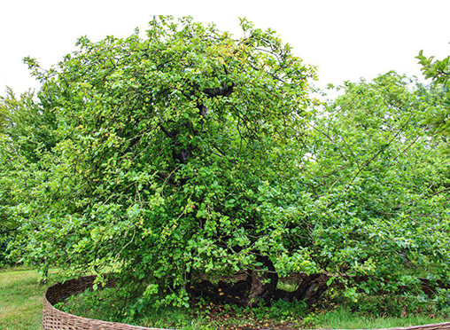
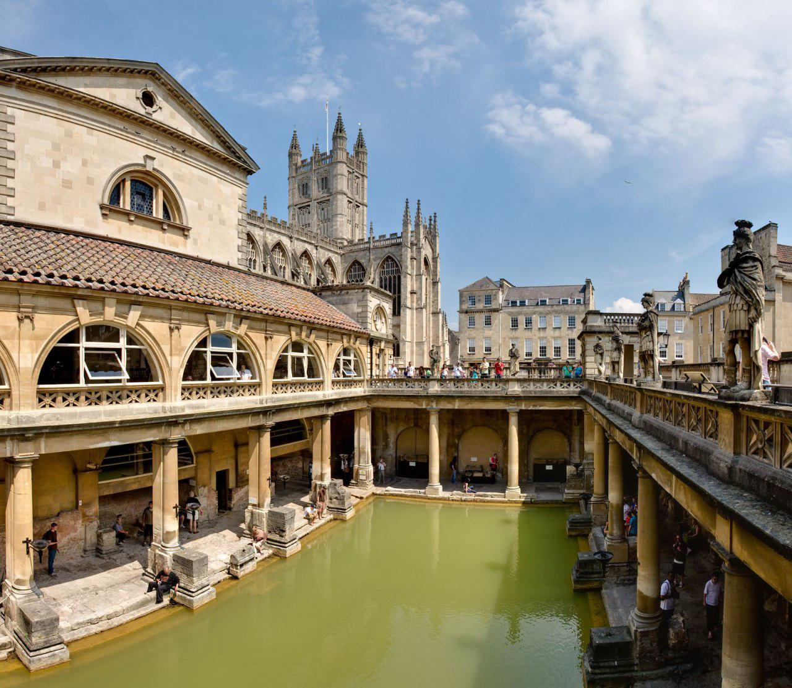
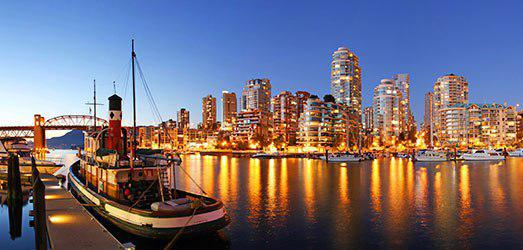
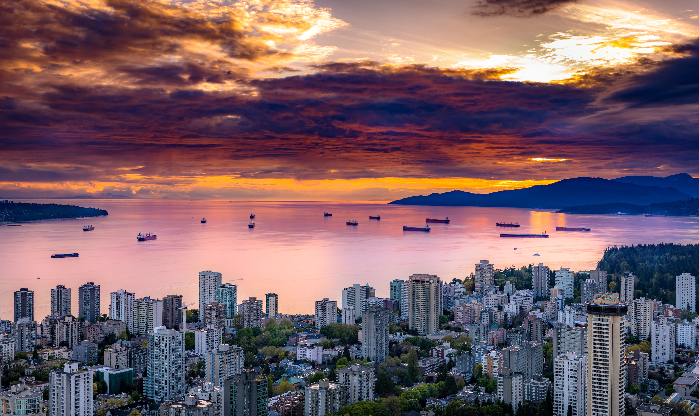

Hunt for sea-shells on top of Snowdon mountain
As the area that makes up Snowdonia National Park was once at the very bottom of a pre-historic ocean, you can really find some pre-historic seashells and fossils all over the mountain!
Snowdon
Snowdon is the highest mountain in Wales, at an elevation of 1,085 metres above sea level, and the highest point in the British Isles outside the Scottish Highlands. It is located in Snowdonia National Park (Parc Cenedlaethol Eryri) in Gwynedd. It is the busiest mountain in the United Kingdom and the third most visited attraction in Wales, with 582,000 people visiting annually. It is designated as a national nature reserve for its rare flora and fauna.
The snowdrifts were scored by the volcanoes during the period of the scorching season and were scored by the scribbling of the snowdrifts. The cliff faces on Snowdon, including the Clogwyn Du'r Arddu, are as much as 1953 ascent of Mount Everest.
There are a number of railway tracks that are covered in 1896 and the summit can be reached from 4.7 miles (7.6 km) from Llanberis to the summit station. Eryri, open only when the railway is operating, was built in the 1930s. The railway is generally referred to as summit station from Whitsun to October. The name Snowdon is from the Old English for "snow hill", while the Welsh name – Yr Wyddfa – means "the tumulus" or "the barrow", which may refer to the cairn thrown over the legendary giant Rhitta Gawr after his defeat by King Arthur. As well as other figures from Arthurian legend, the mountain is linked to a legendary afanc (water monster) and the Tylwyth Teg.
Discover a tropical island
The Scilly Isles are a very special place to discover in the UK. The climate is strongly influenced by the warmth of Gulf Stream.
Pay a visit to Tresco Abbey Gardens, an oasis of palm trees, exotic plants and flowers that can’t be seen anywhere else in the UK, a truly beautiful and relaxing place.
It is likely that until relatively recent times the islands were much larger and perhaps joined together into one island named Ennor. Rising sea levels flooded the central plain, forming the current 55 islands and islets, if an island is defined as "land surrounded by water at high tide and supporting land vegetation".
At certain low tides the sea becomes shallow enough for people to walk between some of the islands.
Offshore, midway between Land's End and the Isles of Scilly, is the supposed location of the mythical lost land of Lyonesse, referred to in Arthurian literature, of which Tristan is said to have been a prince. This may be a folk memory of inundated lands, but this legend is also common among the Brythonic peoples; the legend of Ys is a parallel and cognate legend in Brittany as is that of Cantre'r Gwaelod in Wales.
Scilly has been identified as the place of exile of two heretical 4th century bishops, Instantius and Tiberianus, who were followers of Priscillian.

Newton’s apple tree
It’s said that this apple tree at Woolsthorpe Manor in Lincolnshire is the exact tree where Isaac Newton saw an apple fall, prompting him to think of gravity and change the way we viewed the world.
The account of Isaac Newton's discovering the principle of universal gravitation by observing the fall of an apple is very well known and usually dismissed as apocryphal. However little can be further from the truth for Newton gave this account of his discovery to several acquaintances. The first written account appears in notes on Newton's life collectedthe year of Newton's death. It states that: "He first thought of his system of gravitation which he hit upon by observing an apple fall from a tree"
In other accounts it is stated that Newton was sitting in his garden at Woolsthorpe Manor near Grantham in Lincolnshire when the incident occurred.
Although Newton did not specify from which tree he observed the apple fall it turned out that it was the only apple tree growing in his garden and thus it selected itself.
The tree had been cared for since the 1750’s by generations of the Woolerton family, who were tenant farmers who lived in the house from 1733 to 1947. Despite all their efforts to prop the aged tree up, it blew down in a storm in 1816. Some branches were removed but the major portion of the tree was left and re-rooted. The surprising fact is that this tree is still growing at Woolsthorpe Manor today and now must be over 350 years old.
Isaac Newton’s Apple Tree is now on its third set of roots but still provides a good crop of apples each summer.

Join a festival of fire
There are many festivals that happen all across the UK. But Up Helly Aa is one of the best! It originated out of a Yule tradition and is held in the Shetlands during the festive winter months.
The modern Beltane Fire Festival is inspired by the ancient Gaelic festival of Beltane which began on the evening before 1 May and marked the beginning of summer. The modern festival was started in 1988 by a small group of enthusiasts including the musical collective Test Dept, with academic support from the School of Scottish Studies at the University of Edinburgh. Since then the festival has grown, and now involves over 300 voluntary collaborators and performers with available tickets often selling out.
While the festival draws on a variety of historical, mythological and literary influences, the organisers do not claim it to be anything other than a modern celebration of Beltane, evolving with it`s participants.


Visit a Roman bath
One of the best preserved Roman baths in all of Europe is situated in the gorgeous and beautiful city of Bath (around 2 hours west of London). Take a tour of this beautiful historic site and see it yourself. It's a pity, but you’re no longer allowed to bathe here.
The Roman Baths complex is a site of historical interest in the English city of Bath. It is a well-preserved Roman site once used for public bathing.
The Roman Baths themselves are below the modern street level. There are four main features: the Sacred Spring, the Roman Temple, the Roman Bath House and the museum, holding finds from Roman Bath. The buildings above street level date from the 19th century.
The Baths are a major tourist attraction and, together with the Grand Pump Room, receive more than one million visitors a year. Visitors can tour the baths and museum but cannot enter the water.
The water which bubbles up from the ground at Bath falls as rain on the nearby Mendip Hills. It percolates down through limestone aquifers to a depth of between 2,700 and 4,300 metres (8,900 and 14,100 ft) where geothermal energy raises the water temperature to between 69 and 96 °C (156.2 and 204.8 °F). Under pressure, the heated water rises to the surface along fissures and faults in the limestone. This process is similar to an enhanced geothermal system, which also makes use of the high pressures and temperatures below the earth's crust. Hot water at a temperature of 46 °C (114.8 °F) rises here at the rate of 1,170,000 litres (257,364 imp gal) every day, from a geological fault (the Pennyquick fault). In 1983 a new spa water bore-hole was sunk, providing a clean and safe supply of spa water for drinking in the Pump Room.

Vancouver
It's one of the most popular places to visit in Canada. Due to its geographical position it gives you a possibility to swim in the ocean, rollerblade through scenic parks and snow ski in the mountains all in one day.
Vancouver is consistently named as one of the top five worldwide cities for livability and quality of life, and the Economist Intelligence Unit acknowledged it as the first city ranked among the top-ten of the world's most well-living cities for five consecutive years. Vancouver has hosted many international conferences and events, including the 1954 British Empire and Commonwealth Games, UN Habitat I, Expo 86, the World Police and Fire Games in 1989 and 2009; and the 2010 Winter Olympics and Paralympics which were held in Vancouver and Whistler, a resort community 125 km (78 mi) north of the city. In 2014, following thirty years in California, the TED conference made Vancouver its indefinite home. Several matches of the 2015 FIFA Women's World Cup were played in Vancouver, including the final at BC Place.
Major film production studios in Vancouver and nearby Burnaby have turned Greater Vancouver and nearby areas into one of the largest film production centres in North America, earning it the nickname "Hollywood North".
Vancouver is one of the most ethnically and linguistically diverse cities in Canada according to that census; 52% of its residents have a first language other than English. Roughly 30% of the city's inhabitants are of Chinese eritage. Vancouver is classed as a Beta global city.
The original settlement, named Gastown, grew up on clearcuts on the west edge of the Hastings Mill logging sawmill's property, where a makeshift tavern had been set up on a plank between two stumps and the proprietor, Gassy Jack, persuaded the curious millworkers to build him a tavern, on July 1, 1867. From that first enterprise, other stores and some hotels quickly appeared along the waterfront to the west. Gastown became formally laid out as a registered townsite dubbed Granville. As part of the land and political deal whereby the area of the townsite was made the railhead of the Canadian Pacific Railway , it was renamed "Vancouver" and incorporated shortly thereafter as a city, in 1886. By 1887, the Canadian Pacific transcontinental railway was extended westward to the city to take advantage of its large natural seaport to the Pacific Ocean, which soon became a vital link in a trade route between the Orient / East Asia, Eastern Canada, and Europe. As of 2014, Port Metro Vancouver is the third-largest port by tonnage in the Americas (recently displacing New York City), 27th in the world, the busiest and largest in Canada, and the most diversified port in North America.While forestry remains its largest industry, Vancouver is well known as an urban centre surrounded by nature, making tourism its second-largest industry.


Banff National Park
It's one of the nation’s largest and most visited national parks. It has breathtaking scenery and wildlife which includes black bears, grizzly bears, bison, moose, bighorn sheep, wolves and bald eagles.
Banff National Park is Canada's oldest national park and was established in 1885. Located in the Rocky Mountains.
Banff National Park has a subarctic climate with three ecoregions, including montane, subalpine, and alpine. The forests are dominated by Lodgepole pine at lower elevations and Engelmann spruce in higher ones below the treeline, above which is primarily rocks and ice. Mammal species such as the grizzly, cougar, wolverine, elk, bighorn sheep and moose are found, along with hundreds of bird species. Reptiles and amphibians are also found but only a limited number of species have been recorded. The mountains are formed from sedimentary rocks which were pushed east over newer rock strata, between 80 and 55 million years ago. Over the past few million years, glaciers have at times covered most of the park, but today are found only on the mountain slopes though they include the Columbia Icefield, the largest uninterrupted glacial mass in the Rockies. Erosion from water and ice have carved the mountains into their current shapes.
The Canadian Pacific Railway was instrumental in Banff's early years, building the Banff Springs Hotel and Chateau Lake Louise, and attracting tourists through extensive advertising. In the early 20th century, roads were built in Banff, at times by war internees from World War I, and through Great Depression-era public works projects. Since the 1960s, park accommodations have been open all year, with annual tourism visits to Banff increasing to over 5 million in the 1990s. Millions more pass through the park on the Trans-Canada Highway. As Banff has over three million visitors annually, the health of its ecosystem has been threatened. In the mid-1990s, Parks Canada responded by initiating a two-year study, which resulted in management recommendations, and new policies that aim to preserve ecological integrity.


Niagara Falls
Ontario
It's a series of three waterfalls situated on the border of Canada’s Ontario and the United States’ New York. The Ontario side of the Falls is called Horseshoe Falls and offers the best views and most attractions. One of the best places to view the Niagara Falls on the Ontario side is from Queen Victoria Park where the Falls are illuminated and fireworks are displayed nightly during the summer. Here you can also find observation towers, restaurants, souvenir shops, casinos and high-rise hotels.

Skyline of Niagara Falls, Canada, as seen from Niagara Falls State Park across the river in the United States Niagara Falls is a city in Ontario, Canada. It is on the western bank of the Niagara River in the Golden Horseshoe region of Southern Ontario, with a population of 88,071 at the 2016 census. The municipality was incorporated on 12 June 1903. Across the Niagara River is Niagara Falls, New York.
The Niagara River flows over Niagara Falls at this location, creating a natural spectacle which attracts millions of tourists each year.
This area, which stretches along the Niagara Parkway and tourist promenade, is particularly concentrated at the brink of the falls. Apart from the river's natural attractions, it includes observation towers, high-rise hotels, souvenir shops, museums, indoor water parks, casinos and theatres, mostly with colourful neon billboards and advertisements, and sufficient parking to accommodate visitors. Further to the north or south, golf courses are operated alongside historic sites from the War of 1812.

The Outback
Uluru
The Outback is a central part of Australia where few people live. It’s often dry like a desert. But there is a famous nature beauty, Ayers Rock (the official name is Uluru). Its colour depends on the temperature and can vary from dark blue to bright red. Almost half a million people visit Uluru every year.
Uluru also known as Ayers Rock and officially gazetted as "Uluru / Ayers Rock", is a large sandstone rock formation in the southern part of the Northern Territory in central Australia. It lies 335 km (208 mi) south west of the nearest large town, Alice Springs.
Uluru is sacred to the Pitjantjatjara Anangu, the Aboriginal people of the area. The area around the formation is home to an abundance of springs, waterholes, rock caves and ancient paintings. Uluru is listed as a UNESCO World Heritage Site. Uluru and Kata Tjuta, also known as the Olgas, are the two major features of the Uluṟu-Kata Tjuṯa National.

The local Aṉangu do not climb Uluru because of its great spiritual significance. They request that visitors do not climb the rock, partly due to the path crossing a sacred traditional Dreamtime track, and also due to a sense of responsibility for the safety of visitors. The visitors guide says "the climb is not prohibited, but we prefer that, as a guest on Aṉangu land, you will choose to respect our law and culture by not climbing."
According to a 2010 publication, just over one-third of all visitors to the park climb Uluru; a high percentage of these were children. A chain handhold added in 1964 and extended in 1976 makes the hour-long climb easier, but it is still a steep, 800 m (0.5 mi) hike to the top, where it can be quite windy. It is recommended individuals drink plenty of water while climbing, and those who are unfit, suffer from vertigo or medical conditions restricting exercise, do not attempt it. Climbing Uluru is generally closed to the public when high winds are present at the top. There have been at least 37 deaths relating to recreational climbing since such incidents began being recorded. About one-sixth of visitors made the climb between 2011 and 2015.
Several controversial incidents on top of Uluru in 2010, including a striptease, golfing and nudity, led to renewed calls for banning the climb.
On 1 November 2017, the Uluṟu–Kata Tjuṯa National Park board voted unanimously to prohibit climbing Uluru, with the ban to take effect on 26 October 2019.
Great Barrier Reef
There are over 10,000 beaches in Australia! The Great Barrier Reef is on the north-east coast of Australia. It is a marine park that is over 3,000 kilometres long! It’s very famous for its natural beauty. The Reef has lots of colourful corals and is home to whales, dolphins, turtles and crocodiles!
The Great Barrier Reef is the world's largest coral reef system. The reef is located in the Coral Sea, off the coast of Queensland, Australia. The Great Barrier Reef can be seen from outer space and is the world's biggest single structure made by living organisms. This reef structure is composed of and built by billions of tiny organisms, known as coral polyps.
The Great Barrier Reef has long been known to and used by the Aboriginal Australian and Torres Strait Islander peoples, and is an important part of local groups' cultures and spirituality. The reef is a very popular destination for tourists, especially in the Whitsunday Islands and Cairns regions. Tourism is an important economic activity for the region, generating over AUD$3 billion per year. In November 2014, Google launched Google Underwater Street View in 3D of the Great Barrier Reef.


Animal World
As Australia was cut off the other continents a long time ago, there are lots of animals you can see nowhere else. For example, kangaroo, koala and platypus. WATCH OUT! Australia also has some of the most dangerous animals in the world. Several people are bitten by poisonous snakes and spiders every year.
Australian forests are mostly made up of evergreen species, particularly eucalyptus trees in the less arid regions; wattles replace them as the dominant species in drier regions and deserts. Among well-known Australian animals are the monotremes (the platypus and echidna); a host of marsupials, including the kangaroo, koala, and wombat, and birds such as the emu and the kookaburra. Australia is home to many dangerous animals including some of the most venomous snakes in the world. The dingo was introduced by Austronesian people who traded with Indigenous Australians around 3000 BCE. Many animal and plant species became extinct soon after first human settlement, including the Australian megafauna; others have disappeared since European settlement, among them the thylacine.

Many of Australia's ecoregions, and the species within those regions, are threatened by human activities and introduced animal, chromistan, fungal and plant species. All these factors have led to Australia's having the highest mammal extinction rate of any country in the world. The federal Environment Protection and Biodiversity Conservation Act 1999 is the legal framework for the protection of threatened species. Numerous protected areas have been created under the National Strategy for the Conservation of Australia's Biological Diversity to protect and preserve unique ecosystems.

New Zealand
Natural spectacles and unique wildlife encounters are two of New Zealand's biggest draw-cards.There are few places in the world where, within the space of one day, you can experience mountain vistas, ancient forests, volcanic landscapes and stunning coastline - all whilst spotting New Zealand wildlife found nowhere else on earth.
New Zealand attracts lovers of nature and fans of dangerous sport. Queenstown, which is situated in the dramatic south-western corner of New Zealand's South Island, is the extreme sports capital of the world. And if you like taking risks, you can try anything here - from parasailing to skydiving. Besides, it's a very beautiful place. The town lies on the edges of the crystal clear Lake Wakatipu and its stunning views of the Remarkables mountain range. The Shotover River which runs through deep canyons into Lake Wakatipu is the location of one of the most exciting experiences - the Shotover jet. The most relaxing way to enjoy the stunning scenery around Queenstown is by taking a trip on the beautiful old TSS Earnslaw. It travels very slowly so that visitors can enjoy the views.
A developed country, New Zealand ranks highly in international comparisons of national performance, such as quality of life, health, education, protection of civil liberties, and economic freedom. New Zealand underwent major economic changes during the 1980s, which transformed it from a protectionist to a liberalised free-trade economy. The service sector dominates the national economy, followed by the industrial sector, and agriculture. International tourism is a significant source of revenue.
There are two permanent waterfalls, Lady Bowen Falls and Stirling Falls. After heavy rain temporary waterfalls can be seen running down the steep sided rock faces that line the fiord. They are fed by rain water drenched moss and will last a few days at most once the rain stops. Dutch explorer Abel Tasman, in 1642, was the first non-Polynesian to sight the North West coast of the South Island of New Zealand.Tasman named his find Staten Landt and this appeared on maps from as early as 1645.His two ships stopped to take on fresh water in Golden Bay, but were attacked by Māori and four of his men and several Māori were killed there - causing him to name it "Murderer's Bay". Leaving the South Island by sailing up the west coast of the North Island, he mapped a small portion of the coastline; Dutch cartographers re-named this known part as Nova Zeelandia.
As part of a dedicated voyage of scientific discovery, Yorkshireman James Cook, a Captain of the Royal Navy, circumnavigated the North, South and Stewart islands in 1769 and charted their coasts. A few people of European and US origin, mostly sealers, whalers, traders and missionaries, settled during the next 80 years, some taking local wives.
New Zealand is now a socially enterprising, vigorous and independent nation with a widely-travelled and well-educated population of more than 4 million.


Washington DC
Washington DC is the capital of the USA. It is a very important city. The President and his family live in Washington DC in the White House. The White House has tennis courts, a swimming pool and a cinema for the President’s family. Inside the White House is the Oval Office where the President works. It is also open to tourists as well as some other rooms of the White House BUT the visit should be agreed in advance.
Washington was founded after the American Revolution as the seat of government of the newly independent country, and named after George Washington, the first President of the United States. Washington is the main city of the Washington metropolitan area, which has a population of 6,131,977. As the seat of the United States federal government and several international organizations, Washington is an important world political capital. The city is also one of the most visited cities in the world, with more than 20 million annual tourists.
Washington had an estimated population of 693,972 as of July 2017, making it the 20th most-populous city in the United States. Commuters from the surrounding Maryland and Virginia suburbs raise the city's daytime population to more than one million during the workweek. The Washington metropolitan area, of which the District is the principal city, has a population of over 6 million, the sixth-largest metropolitan statistical area in the nation.
By law, Washington's skyline is low and sprawling. The federal Height of Buildings Act of 1910 allows buildings that are no taller than the width of the adjacent street, plus 6.1 m. Despite popular belief, no law has ever limited buildings to the height of the United States Capitol Building or the 169 m Washington Monument, which remains the District's tallest structure. City leaders have criticized the height restriction as a primary reason why the District has limited affordable housing and traffic problems caused by urban sprawl.

I love NYC!
The ‘Big Apple’ has a population of 8.2 million people. The New York skyline is very famous. The skyscrapers like the Empire State Building and the Chrysler building are very easy to recognise. About 55 million visitors come to New York every year. Why do they come?
The view from the top of One World Trade Centre
Day or night, the view from the tallest building in the USA is fantastic. You can see islands, bridges, and some of the most famous buildings in the world.
Times Square
It's New York's busiest place. People sell art and jewellery on the street, and you can buy cheap tickets for Broadway musicals and plays. Don't miss this place!
Central Park
This is one of the most surprising places of the city. What can you do there? Visit the zoo or the castle. Walk or jog on the grass. Look at beautiful lakes and gardens. In the winter, you can go ice skating, and in the summer, you can watch a Shakespeare's play. There's something for everyone.
The Statue of Liberty
It is a symbol of hope and freedom. Don't miss one of the most famous sights in the world!
New York City traces its origins to a trading post founded by colonists from the Dutch Republic in 1624 on Lower Manhattan; the post was named New Amsterdam in 1626. The city and its surroundings came under English control in 1664 and were renamed New York after King Charles II of England granted the lands to his brother, the Duke of York. New York served as the capital of the United States from 1785 until 1790. It has been the country's largest city since 1790. The Statue of Liberty greeted millions of immigrants as they came to the Americas by ship in the late 19th and early 20th centuries and is an international symbol of the United States and its ideals of liberty and peace. In the 21st century, New York has emerged as a global node of creativity and entrepreneurship, social tolerance, and environmental sustainability, and as a symbol of freedom and cultural diversity.


Los Angeles
People from all over the world live, work and enjoy the good weather in LA. The city has many important centres of culture, science and technology and it is the movie capital of the world! Los Angeles is one of the most substantial economic engines within the United States, with a diverse economy in a broad range of professional and cultural fields. Also, Los Angeles is famous as the home of Hollywood, a major center of the world entertainment industry. You can see the famous Hollywood sign in the hills of the city. You can also walk down Hollywood Boulevard and see the handprints of famous actors.
Hollywood
Hollywood is a district in the central region of Los Angeles, California, notable as the home of the U.S. film industry including several of its historic studios. Its name has come to be a shorthand reference for the industry and the people associated with it.
In 2002, some Hollywood voters began a campaign for the area to secede from Los Angeles and become a separate municipality. In June of that year, the Los Angeles County Board of Supervisors placed secession referendums for both Hollywood and the San Fernando Valley on the ballot. To pass, they required the approval of a majority of voters in the proposed new municipality as well as a majority of voters in all of Los Angeles. In the November election, both measures failed by wide margins in the citywide vote.